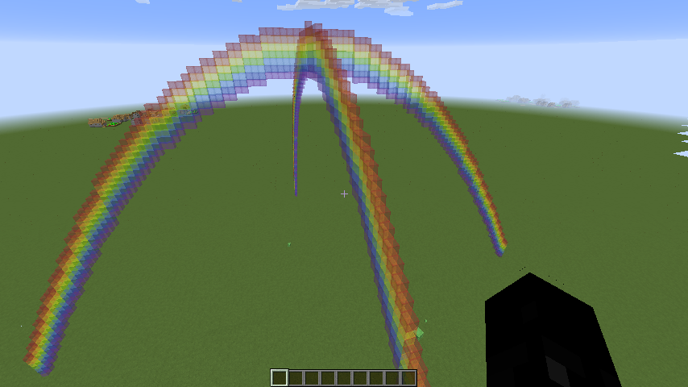

Exploring Minecraft code in Jupyter
Some breif notes from a lazy Sunday morning spent exploring the minecraft coding environment that I set up using Raspberry Jam earlier. I'm taking my notes in Jupyter while I explore the Minecraft API and poke around with one of the sample programs. Since my blogging engine Nikola also supports Jupyter Notebooks as one of it's import formats, I found that I could do Litterate Programming for Minecraft quite nicely!
More about the API¶
The Stuff About Code web site has some really useful detail for the methods included in the API:
- MCPI API tutorial and basics
- MCPI API reference
- Minecraft Stuff documentation (higher-level primatives and turtle-graphics)
- And heaps of example projects including in-world Snake and a Cannon that fires blocks to blow things up, which show in detail how to use the API
Exploring in a Notebook¶
The PythonTool Mod documentation shows using Jupyter Notebooks to explore Minecraft interactively. Let's try that, since Nikola also uses Notebooks.
Nikola/Python setup¶
I'm using a Python Virtual Environment to run my Nikola blog engine locally. So I'll make changes in there, but it's also possible to do this in a separate "minecraft" venv.
First, add the necessary Python libraries if not already installed:
activate nikola
pip install jupyter-notebook minecraftstuffWhen that's ready, I made a new post in Nikola, but you can skip that and just create a new Notebook after starting Jupyter.
[src][mjl@milo:~/hax/net/blog/milosophical.me]
[17:11](nikola)$ nikola new_post -d -2 -f ipynb
Creating New Post
-----------------
Title: minecraft-python-3
Scanning posts..........done!
[2018-02-10T10:50:09Z] NOTICE: compile_ipynb: No kernel specified, assuming "python3".
[2018-02-10T10:50:09Z] INFO: new_post: Your post's metadata is at: posts/2018/minecraft-python-3.meta
[2018-02-10T10:50:09Z] INFO: new_post: Your post's text is at: posts/2018/minecraft-python-3.ipynb
[src:?][mjl@milo:~/hax/net/blog/milosophical.me]
[21:50](nikola)$I also need to link to the MCPIPY library files, so that I can import them in Jupyter:
cd posts/2018
ln -s ~/fun/minecaft/mcpipy/mcpi mcpi
git ignore mcpi #I don't want this in my blog codeNow start the notebook:
[src:!?][mjl@milo:~/Grid/MEGA/Projects/blog/milosophical.me/posts/2018]
[08:10](nikola)$ jupyter notebook
[I 08:10:32.921 NotebookApp] Serving notebooks from local directory: /Users/mjl/Grid/MEGA/Projects/blog/milosophical.me/posts/2018
[I 08:10:32.921 NotebookApp] 0 active kernels
[I 08:10:32.921 NotebookApp] The Jupyter Notebook is running at: http://localhost:8888/?token=08f71c4de52c71b408c44442bea7774169095a902db68336
[I 08:10:32.921 NotebookApp] Use Control-C to stop this server and shut down all kernels (twice to skip confirmation).
[C 08:10:32.923 NotebookApp]
Copy/paste this URL into your browser when you connect for the first time,
to login with a token:
http://localhost:8888/?token=08f71c4de52c71b408c44442bea7774169095a902db68336
[I 08:10:32.999 NotebookApp] Accepting one-time-token-authenticated connection from ::1This will launch your computer's default web browser and automatically log it into the Jupyter system with the token. You can then navigate to the post or create a new Notebook by using the New button.
Hacking an example¶
Let's play with the zhuowei_rainbow.py example code (you can see the original code on github (arpruss' copy, with changes for Python3). You should probably open that link in a new window so you can compare with this post. Here it is in case the link ever goes stale:
#!/usr/bin/env python
#
# mcpipy.com retrieved from URL below, written by zhuowei
# http://www.minecraftforum.net/topic/1638036-my-first-script-for-minecraft-pi-api-a-rainbow/
import mcpi.minecraft as minecraft
import mcpi.block as block
from math import *
import server
colors = [14, 1, 4, 5, 3, 11, 10]
mc = minecraft.Minecraft.create(server.address)
height = 60
mc.setBlocks(-64,0,0,64,height + len(colors),0,0)
for x in range(0, 128):
for colourindex in range(0, len(colors)):
y = sin((x / 128.0) * pi) * height + colourindex
mc.setBlock(x - 64, int(y), 0, block.WOOL.id, colors[len(colors) - 1 - colourindex])
This is a nice simple program that has a few things I'd like to change.
- I'd like to use STAINED_GLASS blocks instead of WOOL, so that the rainbow is transparent
- It has a bug where it clears all the blocks under it to AIR which breaks anything that you have underneath the rainbow:
- It'd be nice to be able to place a rainbow near where the player is, instead of allways at 0,0,0
- The rainbow is sweeping over the X axis (West-East), but I'd rather it went over the Z access (South-North) so that it's in the right orrientation: 90 degrees offset relative to the Sun
Start up Minecraft with the Forge mods and play a Single-player game¶
Okay, now I can edit inline of this post, I'll just copy-paste the code from the file into here. Let's hack!
Import the Minecraft library objects¶
import mcpi.minecraft as minecraft
import mcpi.block as block
from math import *
import server
Oh, whoops!
Well, okay, Jupyter can't find the server library... hmm. It's not part of mcpi, that's why. What does that code actually do? I'll take a look (just the code please, no comments):
%cd ~/fun/minecraft/mcpipy/
!!egrep -v '^#' server.py
That is code to specify which minecraft server to connect to. A lot of the mcpipy examples include it. It's designed so that you keep a server.py together with your scripts and edit it to change where to connect to. I'm going to just skip it for running within Jupyter. I'll ignore that error, and replace any mention of server.address or server.is_pi with appropriate values.
Connect to the game¶
(This also sets some values used later)
colors = [14, 1, 4, 5, 3, 11, 10]
mc = minecraft.Minecraft.create()
height = 60
Start experimenting¶
The rest of the zhouwhei_rainbow code looks like this:
mc.setBlocks(-64,0,0,64,height + len(colors),0,0)
for x in range(0, 128):
for colourindex in range(0, len(colors)):
y = sin((x / 128.0) * pi) * height + colourindex
mc.setBlock(x - 64, int(y), 0, block.WOOL.id, colors[len(colors) - 1 - colourindex])
The first line:
mc.setBlocks(-64,0,0,64,height + len(colors),0,0)
is what's clearing all the blocks to AIR (block id 0). It's not necessary, so I won't do that, but I will run the rest
for x in range(0, 128):
for colourindex in range(0, len(colors)):
y = sin((x / 128.0) * pi) * height + colourindex
mc.setBlock(x - 64, int(y), 0, block.WOOL.id, colors[len(colors) - 1 - colourindex])

I nice wooly rainbow. The code loops over the X axis and calculates nice curves for each colour in the rainbow, using the sin function. Each block in the curve is set to WOOL with a data value for the colour, taken from the colors array.
The first thing to do is change it to STAINED_GLASS instead. I'll just repeat this loop and replace the existing blocks:
for x in range(0, 128):
for colourindex in range(0, len(colors)):
y = sin((x / 128.0) * pi) * height + colourindex
mc.setBlock(x - 64, int(y), 0, block.STAINED_GLASS.id, colors[len(colors) - 1 - colourindex])
That's better. You can see the little village showing through the rainbow now.
Let's change the setBlock call so that it sweeps over the Z axis insted of X:
for z in range(0, 128):
for colourindex in range(0, len(colors)):
y = sin((z / 128.0) * pi) * height + colourindex
mc.setBlock(0, int(y), z - 64, block.STAINED_GLASS.id, colors[len(colors) - 1 - colourindex])

That was simple — just swap the position of the arguments to setBlock. I also renamed the loop variable to z so that it's clear what it's doing.
It would be nice to have a rainbow over one of those villages. To do that, the code needs to use a different starting point to the hard-coded 0,0-64,0 in code above. Actually the code uses a lot of magic numbers (like 128 and 64). Let's fix that by defining some values:
height = 60
width = 128.0
pos = mc.player.getPos()
pX=int(pos.x)
pZ=int(pos.z)
pos
Okay, that shows a nice way to debug Minecraft hacks from within a Notebook too: you can just get Jupyter to run a cell and the last value (the pos at the end) will be output like above, in the Notebook.
Using these variables in place of the numbers should be enough to solve our other issues. I'll reformat the code a bit so that it fits within the page width nicer too:
for z in range(0, int(width)):
for idx in range(0, len(colors)):
mc.setBlock(pX,
int(sin((z / width) * pi) * height + idx),
pZ - int(width/2) + z,
block.STAINED_GLASS.id,
colors[len(colors) - 1 - idx])
Sweet! That was fun, next to try doing this with an actual kid.... ;-)